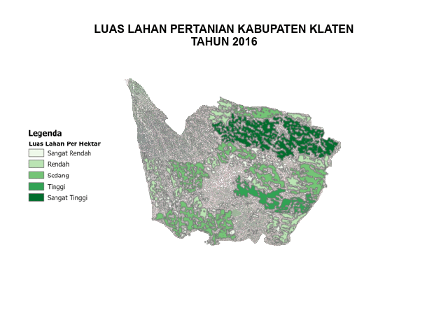
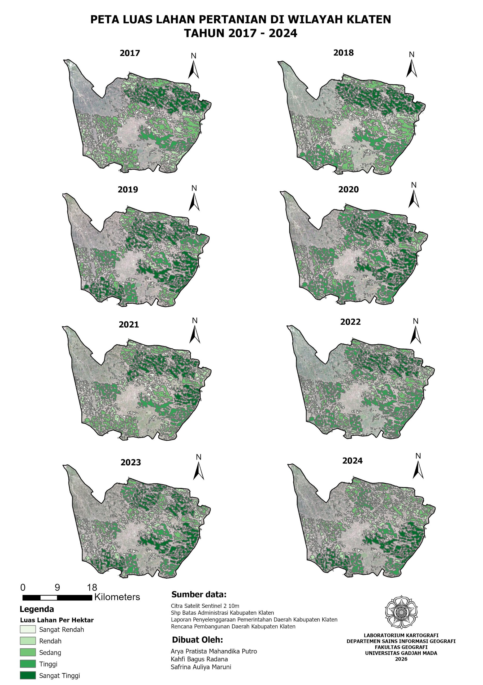

Visual Spasiotemporal Lahan Pertanian
Dua cara melihat luas lahan pertanian Klaten dari tahun ke tahun, lewat animasi dan peta berseri.
Luas lahan per hektar
Sangat rendahRendahSedangTinggiSangat tinggi
🎞️
Animasi perubahanTahun 2016 sampai 2023

Memuat animasi, tunggu sebentar…

🗺️
Peta berseriTahun 2017 sampai 2024, klik untuk memperbesar


Peta dibuat di Laboratorium Kartografi, Departemen Sains Informasi Geografi, Fakultas Geografi UGM. Untuk melihat batas poligon dan citra secara interaktif, buka halaman Peta.